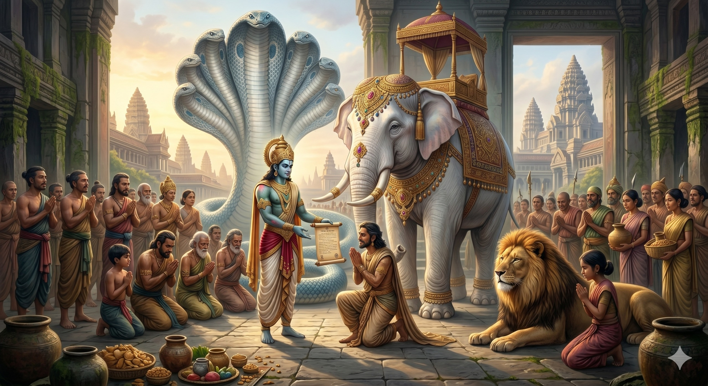
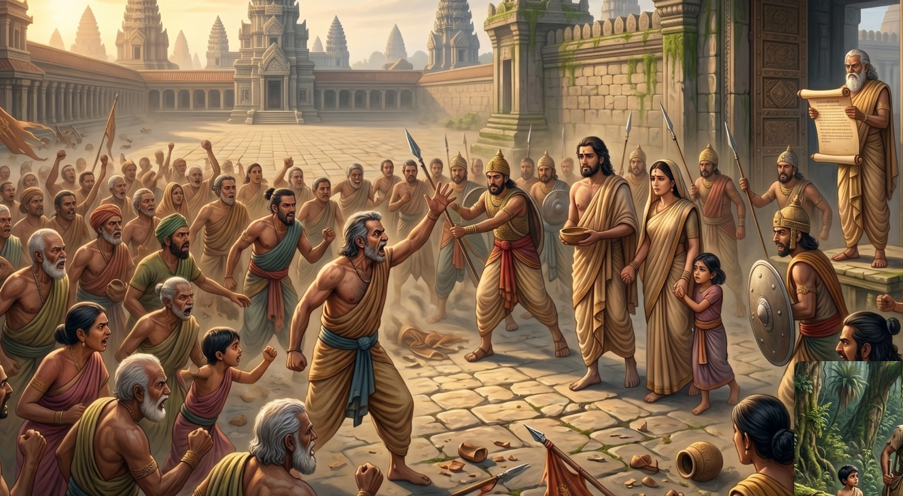
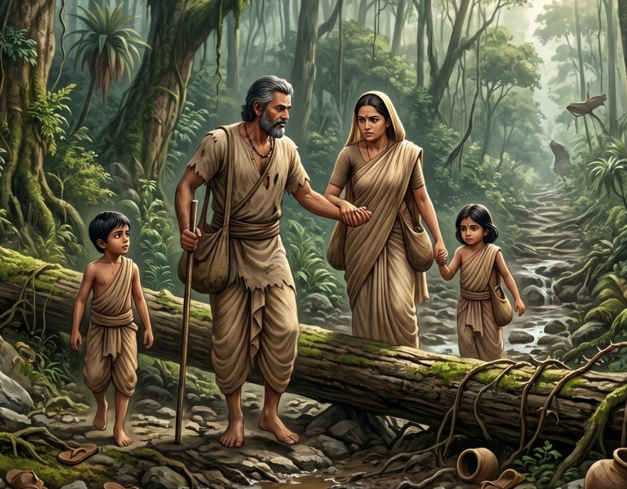
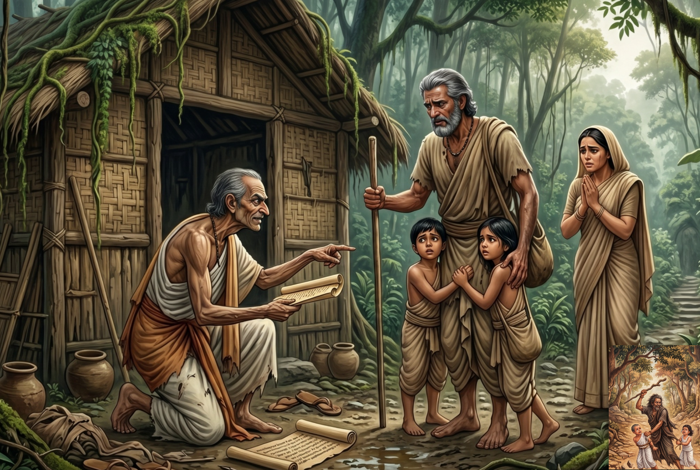
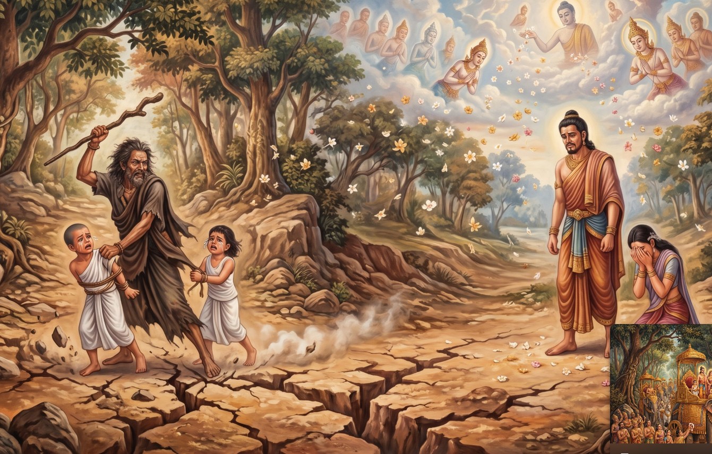
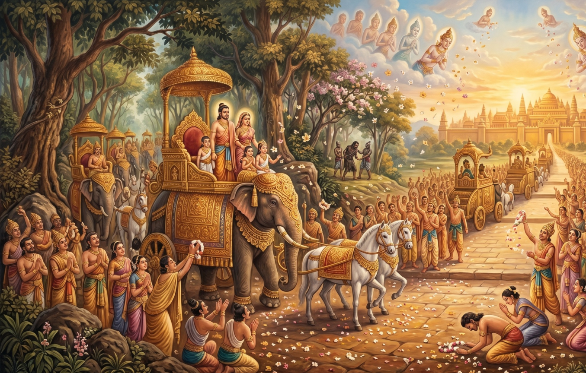

වෙස්සන්තර ජාතකය, පන්සිය පනස් ජාතකය අතරින් ශ්රේෂ්ඨතම ජාතකය ලෙස සැලකේ. බෝසතාණෝ වෙස්සන්තර රාජකුමාරා ලෙස ඉපිද, දාන පාරමිතාව සම්පූර්ණ කරන ලදී. සියල්ල පරිත්යාග කිරීමෙන් පසු, දිව්ය බලයෙන් සියල්ල නැවත ලැබුණි.
මෙම ජාතකය ශ්රී ලාංකික බෞද්ධ සම්ප්රදායයේ ඉතා උතුම් ලෙස සලකනු ලබන අතර, මහත් පින් රැස් කිරීමක් ලෙස සැලකේ.
The Wessantara Jataka is the greatest of all 550 Jataka tales. The Bodhisatta was born as Prince Wessantara and perfected generosity (Dāna Pāramitā) by giving away everything — his elephant, his children, and his wife — only to have all restored through divine grace.